校易淘是一个前后端完整打通的校园二手交易系统：前端 Vue 3 单页应用，后端基于若依（RuoYi）Spring Boot 扩展业务模块，数据层 MySQL + Redis。买家与卖家的交易闭环（浏览、收藏、购物车、下单、支付、发货、收货、退款）均已实现并通过端到端验证。
| 类别 | 技术 | 版本 | 说明 |
|---|---|---|---|
| 编程语言 | Java / JavaScript / TypeScript / SQL | Java 17 编译 JDK 27 运行 | — |
| 开发平台 | Windows 11 · Maven · Node.js · Git | 3.9.9 / 24.21.0 / 2.55.0 | — |
| 后端框架 | Spring Boot | 4.1.0 | 若依 3.9.2 |
| 持久层 | MyBatis / PageHelper | 4.1.0 / 4.1.1 | 预编译防注入 |
| 数据库 | MySQL + Flyway | 26.7.0 / 12.4.0 | 结构版本化 |
| 连接池 | Druid | 1.2.28 | 带监控台 |
| 缓存 | Redis | 7.4.3 | 令牌 / 限流计数 |
| 前端框架 | Vue + Element Plus + Vite | 3.5.44 / 2.5.6 / 6.4.1 | 单页应用 |
| 鉴权 | JWT（JJWT） | 0.9.1 | 访问 + 刷新令牌 |
| 可观测 | Actuator + Micrometer Prometheus | 随 Boot 4.1.0 | /actuator/prometheus |
| 接口文档 | SpringDoc（OpenAPI 3） | 3.1.0 | Swagger UI |
| 容器 / CI | Docker Compose / GitHub Actions | — | 四服务、三作业 |
| 测试 | JUnit 5 / Mockito / node:test / JaCoCo | 0.8.15 | 39 + 19 用例（58） |
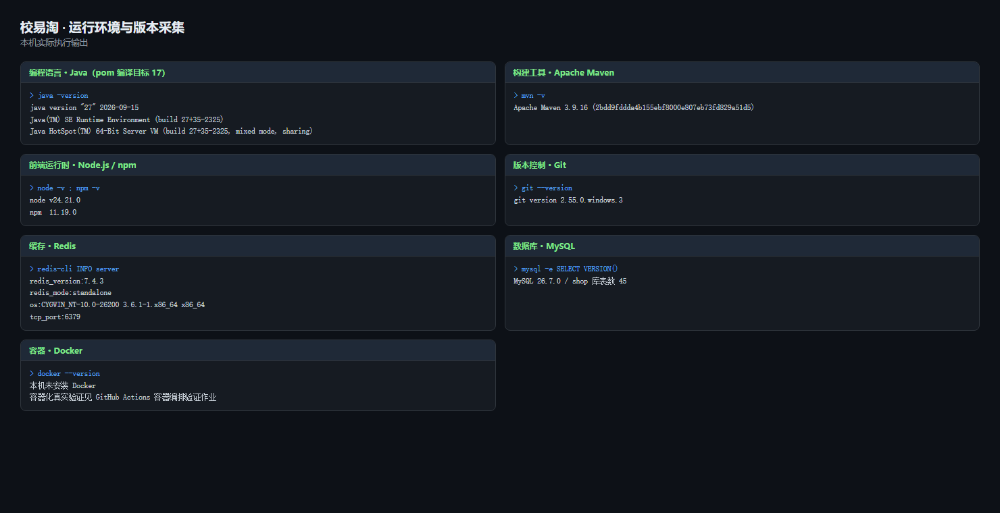
系统是单体 + 分层，没有拆微服务。理由很直接：交易、库存、支付落在同一个库里，拆开就要处理分布式事务，收益抵不上复杂度。分层的目的是把「谁能碰数据库、谁只做编排」定死。
| 模块 / 层 | 职责 | 不该做的事 |
|---|---|---|
| ruoyi-admin | 启动入口、全局配置、打包、Actuator | 写业务规则 |
| ruoyi-framework | 安全（JWT/RBAC/限流/XSS）、拦截器、TraceId、统一异常 | 写交易逻辑 |
| ruoyi-campus | 业务：商品、订单、支付、退款的状态机与校验 | 拼 SQL 字符串 |
| mapper XML | SQL 与索引；原子扣减只放这里 | 做业务判断 |
| Vue 3 SPA | 展示与交互，只通过 /api/v1 访问 | 信任前端传来的身份与金额 |
前端 POST /api/v1/orders → JwtAuthenticationTokenFilter 解析 Bearer 令牌写入安全上下文 → RateLimitInterceptor 按 IP 计数（超限直接 429）→ Controller 校验请求体 → Service 开事务：校验归属与商品状态、建订单与明细、原子扣减库存、写幂等记录 → 提交返回订单号。任一步失败整体回滚，库存不会被扣。
本次有 4 类服务、单机峰值 1354 QPS、p95 56.8ms。这个量级上，微服务要多维护注册中心、配置中心、链路追踪、网关四套基础设施，每个跨服务调用都要处理超时、重试、幂等与一致性；收益（独立部署、独立扩容）用不上，成本却立刻要付。
所以选单体，但为拆分留了口子：业务按 api/controller/service/mapper 分层，边界清晰；应用无状态（JWT + Redis），多实例 + LB + 灰度已验证横向扩展这条路通；数据库读写分离的开关（slave.enabled）也已预留，触发条件是写 QPS 持续超过 200。
讲解用的口头稿见 docs\架构讲解稿.md（3–5 分钟，含停顿点与三个高频追问的应答）。
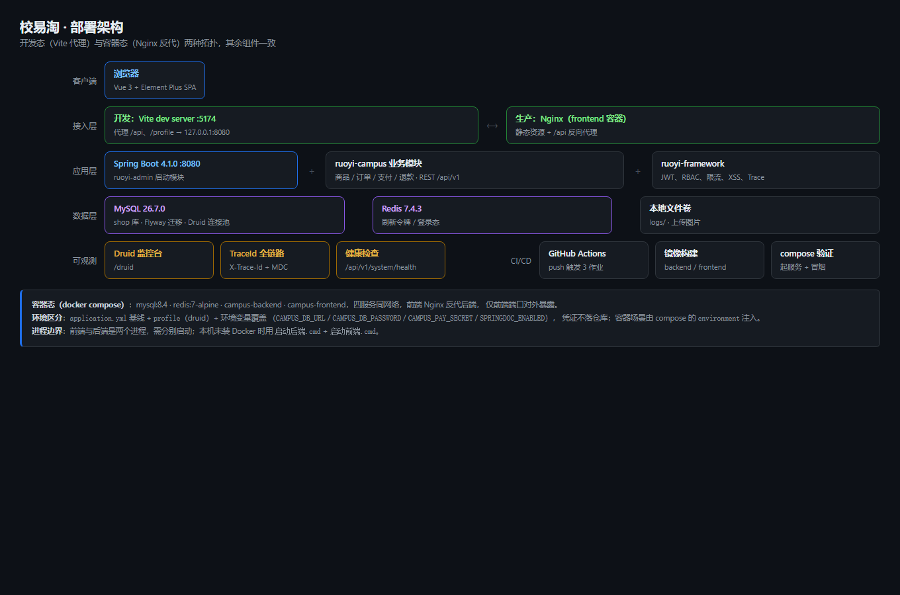
| 形态 | 接入方式 | 说明 |
|---|---|---|
| 开发态 | Vite dev server（:5174）代理 /api 到 :8080 | 热更新 |
| 容器态 | Nginx 反代 /api，仅前端端口对外 | compose 四服务 |
| HTTPS | Spring Boot 内置 TLS，:8443 | 自签证书验证；生产建议 Nginx 终止 |
数据库 shop 共 45 张表，业务表 13 张（ct_ 前缀），其余为若依系统表与 Quartz 调度表。表结构由 Flyway 管理，flyway_schema_history 记录 V1（存量基线）与 V2（订单索引），启动时自动校验迁移。
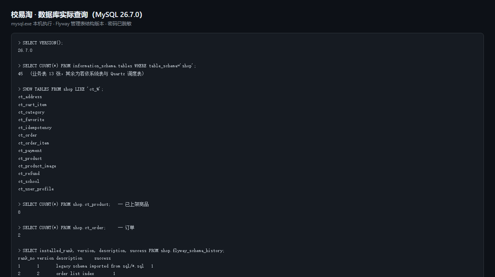
| 索引 | 表 | 作用 |
|---|---|---|
| uk_ct_order_no | ct_order | 订单号唯一 |
| uk_ct_order_idem | ct_order | 幂等键唯一，防重复下单 |
| uk_ct_order_group_seller | ct_order | 多卖家拆单分组唯一 |
| uk_ct_idem_key | ct_idempotency | 幂等记录唯一约束 |
| uk_ct_favorite (user_id, product_id) | ct_favorite | 防重复收藏 |
| uk_ct_cart (user_id, product_id) | ct_cart_item | 同商品合并 |
| uk_ct_payment_no / uk_ct_refund_no | ct_payment / ct_refund | 支付单、退款单唯一 |
| 能力 | 状态 | 实现与证据 |
|---|---|---|
| OAuth2 / JWT | 已覆盖 | JJWT 0.9.1；TokenService 签发校验；JwtAuthenticationTokenFilter 解析 Bearer；刷新令牌落 Redis |
| RBAC | 已覆盖 | sys_user / sys_role / sys_menu / sys_role_menu + @PreAuthorize |
| 密码哈希 | 已覆盖 | BCryptPasswordEncoder，库中不存明文 |
| HTTPS | 已覆盖 | application-https.yml + 自签证书，8443 实测 200（见第六章） |
| 防越权 | 已覆盖 | CtProductServiceImpl:240；订单按 buyer/seller 校验；越权按 404 处理不泄露存在性 |
| 防 SQL 注入 | 已覆盖 | MyBatis 预编译 #{}，mapper 中无 ${} 拼接用户输入 |
| XSS | 已覆盖 | XssFilter:22 + XssHttpServletRequestWrapper，FilterConfig:14 注册 |
| CSRF | 已覆盖 | SecurityConfig:90,93 关闭——无状态 JWT，无 Cookie 会话攻击面 |
| 接口限流 | 已覆盖 | RateLimit 注解 + 滑动窗口；内存 / Redis 双实现，多实例用 ZSET+Lua |
| 敏感数据脱敏 | 部分 | 日志不打印密码；未做统一手机号脱敏 |
| 审计日志 | 已覆盖 | 业务接口 43 处 @Log，写入 sys_oper_log |
| 能力 | 状态 | 实现与证据 |
|---|---|---|
| 事务 | 已覆盖 | campus 14 处 @Transactional(rollbackFor=Exception)：CtOrderServiceImpl:120,327 等 |
| 索引 | 已覆盖 | 见 3.1 |
| 连接池 | 已覆盖 | Druid max-active=8，带 SQL 监控 |
| 分页 | 已覆盖 | PageHelper 4.1.1 |
| 库存防超卖 | 已覆盖 | deductStock：set stock = stock - #{qty} ... where stock >= #{qty}；StockConcurrencyTest 并发验证 |
| 幂等 | 已覆盖 | ct_idempotency + 唯一键；ApiOrderController:37-50 支持 idempotencyKey；IdempotencyConcurrencyTest 验证 |
| 分布式事务 | 未采用 | 单体单库，本地事务已足够，不引入无用框架 |
| 能力 | 状态 | 实现与证据 |
|---|---|---|
| Redis 缓存 | 已覆盖 | 7.4.3，承载刷新令牌、登录态、限流计数 |
| 异步处理 | 未采用 | 无 @Async，强一致优先于吞吐 |
| 消息队列 | 未采用 | 单体同步事务；幂等表已覆盖重复投递 |
| CDN | 未采用 | 静态资源由 Nginx 提供 |
| 连接池 | 已覆盖 | 同 4.2 |
| 压测报告 | 已覆盖 | 见第五章：并发 50 时 1354 QPS、p95 56.8ms、0% 错误 |
| 能力 | 状态 | 实现与证据 |
|---|---|---|
| 日志 | 已覆盖 | Logback 分级：sys-info / sys-error / api-access，每条带 trace |
| 监控 | 已覆盖 | Druid 监控台 /druid；ApiTraceFilter 生成 X-Trace-Id 写入 MDC |
| 指标与告警 | 已覆盖 | /actuator/prometheus 暴露 QPS/RT/JVM/堆/磁盘；5 条告警规则见 docs/ops/alert-rules.yml |
| 健康检查 | 已覆盖 | GET /api/v1/system/health 与 /actuator/health（含 DB 组件状态） |
| 熔断 / 降级 | 未覆盖 | 未引入 Resilience4j；限流器对 Redis 故障做了 fail-open |
| 重试 | 有限 | 前端 http.js 对 401 刷新令牌后重试一次 |
| 备份 / 恢复 | 已覆盖 | scripts/backup.ps1 + restore.ps1；实测往返：106KB dump 恢复后 45 表 / 8 商品 / 2 订单一致 |
| 能力 | 状态 | 实现与证据 |
|---|---|---|
| Git 规范 | 简化 | 主干开发，提交遵循 Conventional Commits |
| 代码规范 | 约定 | 遵循若依分层命名；未接 Checkstyle |
| 静态检查 | 未覆盖 | 无 Checkstyle / ESLint |
| 单元测试 | 已覆盖 | 后端 38 例（JUnit 5 + Mockito），前端 19 例（node:test） |
| 集成测试 | 已覆盖 | 订单全链路、库存并发、幂等并发、限流共享、支付网关、刷新令牌、可观测性、契约 |
| E2E | 未覆盖 | 以 compose 冒烟 + 58 个用例替代 |
| 覆盖率 | 已覆盖 | JaCoCo：业务模块行 42.2%、分支 32.9%；CI 有 35% 门禁 |
| OpenAPI | 已覆盖 | SpringDoc /v3/api-docs/campus；契约快照 + CI 漂移校验 |
| CI/CD | 已覆盖 | GitHub Actions 三作业 + 覆盖率门禁 + 依赖漏洞门禁 |
| Docker / 配置分离 | 已覆盖 | 前后端 Dockerfile + compose；yml + profile + 环境变量，凭证不落库 |
| 能力 | 状态 | 实现与证据 |
|---|---|---|
| 环境区分 | 已覆盖 | 基线 yml + profile（druid / https）+ 环境变量覆盖；测试库独立准备 |
| 部署架构图 | 已覆盖 | 见 2.3 图 2 |
| 回滚方案 | 已覆盖 | 代码回退镜像 tag / git revert；数据 restore.ps1；结构用新迁移脚本 |
| 容器化 | 已覆盖 | docker compose up -d --build；CI 真实验证四服务起停与冒烟 |
| 项 | 原因 | 若补，最小改动 |
|---|---|---|
| 消息队列 / 分布式事务 | 单库单体，本地事务已够用 | 拆服务或支付异步化时再引入 |
| CDN | 本地演示不需要 | 静态资源接云 CDN |
| 熔断 / 降级 | 单体内部调用，无限流以外的下游依赖 | 引入 Resilience4j 包一层外部调用 |
| 静态检查 / E2E | 时间取舍 | Checkstyle / ESLint / Playwright |
| 统一字段脱敏 | 仅做到不打印 | Jackson @JsonSerialize 脱敏 |
压测工具为自研零依赖 Node.js 脚本（scripts/loadtest.mjs），固定并发 worker 循环发压，按权重混合 4 个读接口（健康探活 1 : 商品列表 4 : 类目 2 : 商品详情 2）。
| 并发 / 时长 | 请求数 | QPS | 错误率 | avg | p50 | p95 | p99 |
|---|---|---|---|---|---|---|---|
| 20 / 20s | 22418 | 1120.9 | 0.00% | 17.8ms | 16.7ms | 32.9ms | 49.0ms |
| 50 / 20s | 27081 | 1354.0 | 0.00% | 36.9ms | 38.8ms | 56.8ms | 68.4ms |
| 场景（并发 50） | QPS | avg(ms) | p95(ms) | 错误率 |
|---|---|---|---|---|
| 健康探活 | 150.3 | 4.0 | 6.4 | 0.00% |
| 类目列表 | 300.9 | 35.5 | 47.3 | 0.00% |
| 商品详情 | 300.8 | 35.0 | 47.4 | 0.00% |
| 商品列表（分页 20） | 602.0 | 46.8 | 61.5 | 0.00% |
| 层次 | 工具 | 用例数 | 覆盖内容 |
|---|---|---|---|
| 后端单元 / 集成 | JUnit 5 + Spring Boot Test + Mockito | 39 | 订单生命周期、库存并发、幂等并发、限流共享、支付网关、刷新令牌、可观测性、契约 |
| 前端单元 | Node.js 内置 node:test | 19 | HTTP 层、错误契约、令牌刷新、自动登出 |
| 接口契约 | openapi-typescript + 导出校验 | — | 运行时 OpenAPI 与仓库快照一致性 |
| 范围 | 指令 | 分支 | 行 | 方法 |
|---|---|---|---|---|
| ruoyi-campus 业务模块 | 41.4% | 32.9% | 42.2% | 45.1% |
| 全后端（含框架模块） | 27.1% | 15.4% | 28.6% | 33.9% |
达到 100% 行覆盖的类：TraceContext、ApiNotFoundHandler、CampusApiContractConfig、SandboxPaymentGateway、ApiWebMvcConfig 等。
门禁：scripts/check-coverage.ps1 读取聚合报告，campus 行覆盖低于 35% 时构建失败，并列出未覆盖行最多的 10 个类。本地已验证正反两向：42.2% 通过、阈值提到 60% 时失败并给出清单。
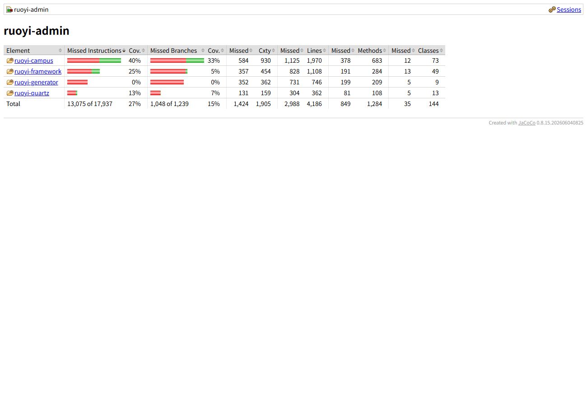
单实例是最大的单点。多实例上线的真正门槛不是"能不能起两个进程"，而是三个共享问题：会话、限流、定时任务。这三件若还在进程内，起第二个副本只会制造新 bug。
| 共享依赖 | 单实例时 | 多实例后必须 |
|---|---|---|
| 登录态 / 令牌 | 内存即可 | JWT 自校验 + 刷新令牌落 Redis（用户换节点不掉登录） |
| 接口限流 | 进程内滑动窗口 | Redis ZSET + Lua 原子计数（否则配额被放大 N 倍） |
| 定时任务 | RAMJobStore | JDBC JobStore 集群 + QRTZ_LOCKS 行锁（否则同一任务跑两遍） |
三项都已落地（见 7.3 与附录 B），因此补负载均衡只剩"加一层网关"。配置见 docs/ops/nginx-lb.conf，要点：least_conn 分发、max_fails=2 fail_timeout=15s 自动摘除、keepalive 32 复用长连接、透传 X-Real-IP（否则限流会把所有人算成同一个 IP 而互相连坐）、proxy_next_upstream 只对幂等读请求重试。
为了让"到底是哪台机器在服务"肉眼可查，后端加了 InstanceIdFilter，每个响应带 X-Instance-Id（取值 CAMPUS_INSTANCE_ID 或 主机名:端口）。docker-compose.scale.yml 与根 compose 叠加即可起两副本 + LB：
docker compose -f docker-compose.yml -f docker-compose.scale.yml up -d --build --scale backend=2 --wait
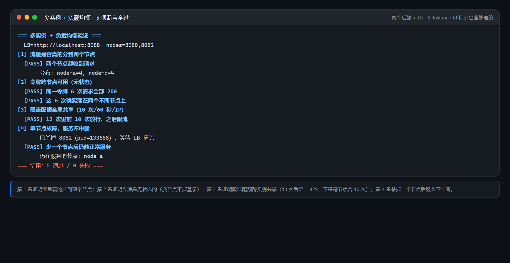
四条断言的含义：① 8 次请求落到两个节点各 4 次；② 同一令牌连打 6 次（跨两节点）全部 200；③ 12 次刷新请求前 10 次放行、第 11 次起统一 429；④ 杀掉一个节点后 6 次请求全部成功。复现命令：scripts\demo-lb.ps1 -KillNode 8082。
为什么第 3 条最关键：如果限流仍是进程内计数，两个节点各放行 10 次，实际放行 20 次 —— 攻击者只要多打几次就能绕过一半的限制。这一条 429 从第 11 次开始而不是第 21 次，才说明配额是真共享的。
| 服务 | 镜像 | 说明 |
|---|---|---|
| mysql | mysql:8.4 | 挂载 docker/mysql-init 自动导入种子数据 |
| redis | redis:7-alpine | 令牌、登录态、限流计数 |
| campus-backend | 自建 | 非 root 运行，分层构建 |
| campus-frontend | 自建 | 多阶段构建，Nginx 提供静态资源并反代 |
多实例后日志分散在各节点磁盘上，「用户报错但不知道是哪台机器处理的那一次」只能一台台 grep。做法是应用直接往 Loki push（LokiLogAppender），而不是让 Promtail 抓文件 —— 容器里日志落在临时卷，抓文件要额外挂载；应用自己推则与部署形态无关，且能带上结构化字段（traceId / instance / level）。
| 设计点 | 为什么这么定 |
|---|---|
| 有界队列 + 满则丢最旧 | 日志不该把业务线程堵死，也不该把堆吃光；丢的是最老的日志，保住最近现场 |
| 推送失败不重试 | Loki 故障时重试会堆积成雪崩；只计数，每 30 秒打一行到 stderr 暴露问题 |
| 默认关闭 | 只有显式配置 LOKI_URL 才启用，本机开发与 CI 不受影响 |
| traceId 复用同一来源 | 响应头、访问日志、Loki 里是同一个值，才可能「用户报一次错就定位到机器与耗时」 |
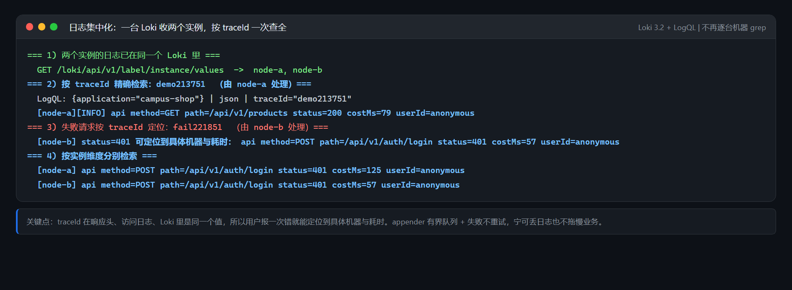
验证脚本 scripts\demo-logs.ps1 六项断言全过：两个实例都在上报、traceId 能精确召回、失败请求可按 traceId 定位、按实例维度可分别检索。
接入 spring-boot-starter-actuator 与 micrometer-registry-prometheus，暴露 /actuator/health（含数据库组件状态）与 /actuator/prometheus（HTTP QPS/RT、JVM 堆与线程、磁盘）。指标统一带 application=campus-shop 标签，可直接被 Prometheus 抓取。
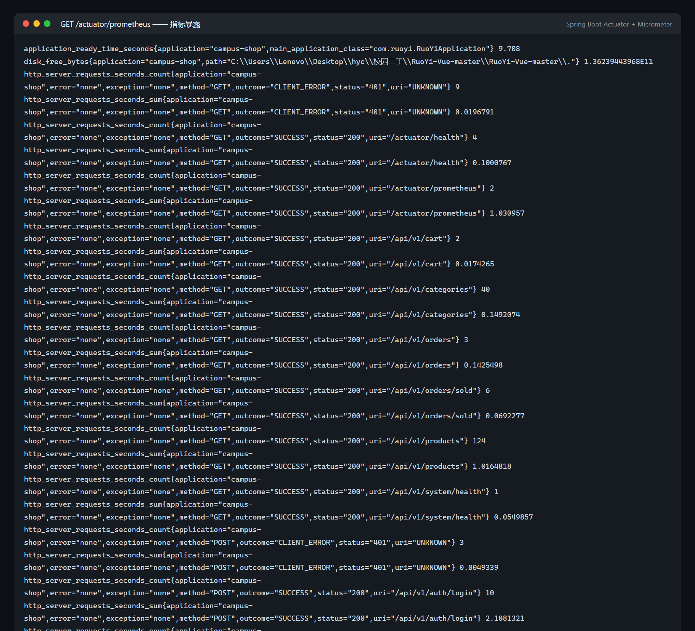
告警规则见 docs/ops/alert-rules.yml：后端不可达、健康检查异常、5xx 错误率 > 1%、P95 > 500ms、堆使用率 > 90%、磁盘 < 10%。原则是只对用户可感知的症状告警，不对单条慢 SQL 告警，避免告警疲劳。
限流器原本是进程内滑动窗口：单实例没问题，一旦扩到 N 个副本，每个副本各算各的，实际放行量被放大 N 倍，限流等于没做。现已提供 Redis 实现（ZSET + Lua 脚本，清理过期成员、计数、写入三步原子完成），通过 campus.ratelimit.store=redis 切换，对外接口不变。
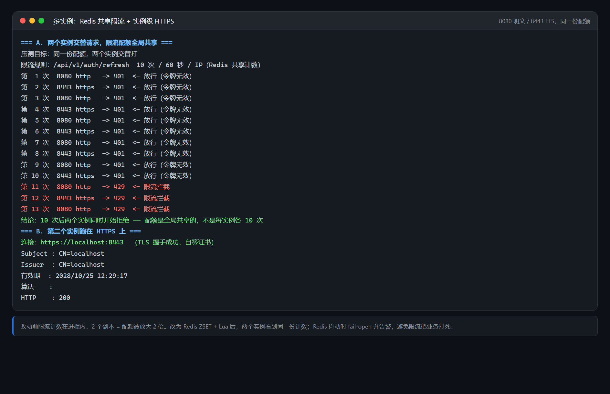
同时启用实例级 HTTPS：scripts/gen-cert.ps1 生成自签 PKCS12，application-https.yml 指定端口与密钥库，实测 https://localhost:8443 返回 200。生产建议在 Nginx / 云负载均衡终止 TLS，应用保持内网 HTTP。
| 作业 | 关键步骤 |
|---|---|
| 后端编译与测试 | JDK 17 → 39 用例 → OpenAPI 契约漂移校验 → 覆盖率门禁（≥35%） → 上传 surefire 与覆盖率产物 |
| 前端构建与测试 | Node 20 → 19 用例 → 构建 → 依赖漏洞门禁（生产依赖 high/critical） → 构建镜像 |
| 容器编排验证 | compose 语法校验 → up --build --wait 起四服务 → 经 Nginx 反代冒烟 → 校验种子数据 → 收摊 |
依赖巡检用 Dependabot 每周开 PR（maven / npm / actions），不把扫描塞进构建链路——Trivy 类工具需要拉漏洞库，在受限网络下会把构建拖到十几分钟。
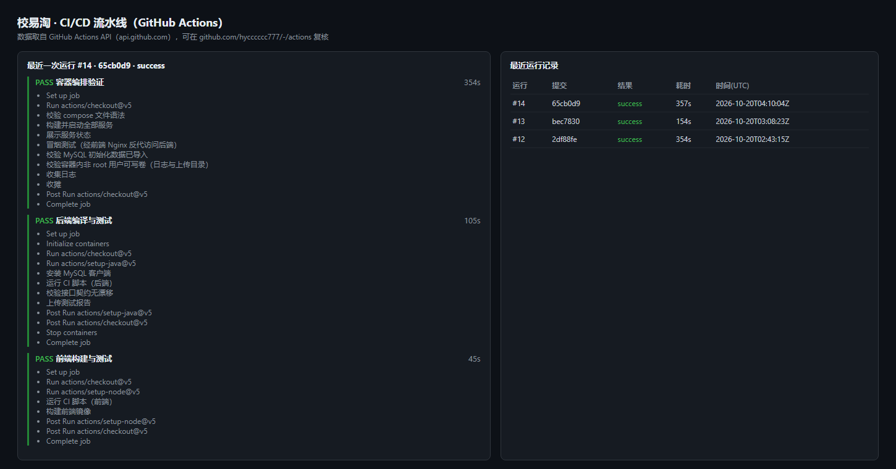
下面的输出由 scripts/demo-business-loop.ps1 真实调用接口产生，没有 mock、没有直接改库。
scripts\reset-demo-data.ps1。演示会真的下单、扣库存，跑过一次后商品就变成「已售出、库存 0」，第二次演示会直接卡在「没有可下单的商品」。一次性脚本不算演示，能反复跑才算 —— 复位脚本只清交易数据（订单/支付/幂等/购物车）并把 8 件商品恢复为「上架、库存 1」，不动用户与分类基线。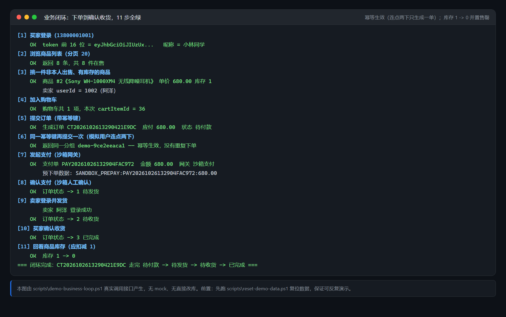
| 步骤 | 动作 | 验证点 |
|---|---|---|
| 1-3 | 买家登录 → 浏览列表 → 选品 | JWT 签发；分页与在售过滤；排除自售商品 |
| 4 | 加入购物车 | 同商品合并，返回 cartItemId |
| 5-6 | 提交订单 → 同幂等键再提交 | 两次返回同一 groupNo，没有重复下单 |
| 7-8 | 创建支付 → 沙箱确认 | 支付单号、预下单数据；订单转入待发货 |
| 9 | 卖家登录 → 发货 | 只有卖家能发货；订单转入待收货 |
| 10-11 | 买家确认收货 → 回看库存 | 状态转已完成；库存 1 → 0 并置为售罄 |
同一批接口，匿名、买家、卖家三种身份得到三种结果。输出由 scripts/demo-rbac.ps1 真实产生。
卖家身份取「这笔订单的实际卖家」，不写死账号。早期版本把卖家固定在 13800001003，一旦订单落在别的卖家名下，「我卖的」那栏就返回空数组，与「应有数据」的标签自相矛盾 —— 这属于演示脚本自身的缺陷，已改为按订单的 sellerId 反查卖家并登录。
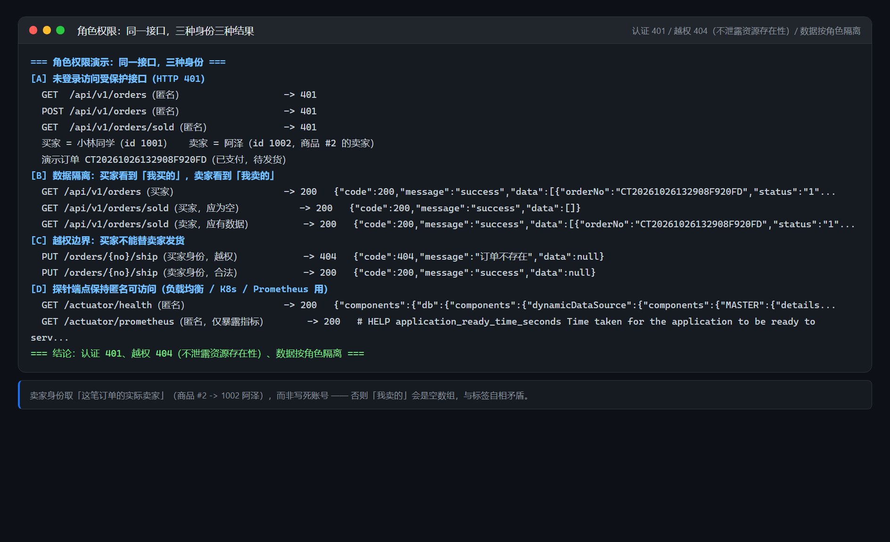
| 请求 | 身份 | 结果 | 含义 |
|---|---|---|---|
| GET /api/v1/orders | 匿名 | 401 | 没有凭证，直接拒绝 |
| GET /api/v1/orders | 买家 | 200 | 只返回自己作为买家的订单 |
| GET /api/v1/orders/sold | 买家 | 200 | 返回空数组——没有卖出过东西 |
| GET /api/v1/orders/sold | 卖家 | 200 | 返回自己作为卖家的订单 |
| PUT /orders/{no}/ship | 买家（越权） | 404 | 按「订单不存在」处理，不泄露资源是否存在 |
| PUT /orders/{no}/ship | 卖家（合法） | 200 | 状态机允许，发货成功 |
| GET /actuator/health | 匿名 | 200 | 探针必须匿名，否则负载均衡无法判断存活 |
本次顺带修掉的一个真问题：认证失败原先只写响应体里的 code:401，HTTP 状态却是 200。网关、CDN、监控和前端拦截器都按 HTTP 状态判断成败，这会让「未登录」被当成成功请求；前端也只有拿到 401 才会走刷新令牌分支。根因是 ServletUtils.renderString 里写死了 setStatus(200)，已增加带状态码的重载并修正入口点。
| 难点 | 问题 | 做法与证据 |
|---|---|---|
| 库存防超卖 | 「先查再改」在并发下必超卖 | 条件原子扣减：update ... set stock = stock - #{qty} ... where stock >= #{qty}，由数据库保证；注意 MySQL 的 SET 从左到右求值，售罄判断必须写在扣减之前，否则剩 1 件会被误判售罄。StockConcurrencyTest 并发验证 |
| 重复下单 | 用户连点、网络重试都会产生两张单 | 幂等键 + ct_idempotency 唯一键 + uk_ct_order_idem，重复提交返回同一 groupNo；演示与 IdempotencyConcurrencyTest 双向验证 |
| 多卖家拆单 | 一个购物车可能来自多个卖家，金额与运费要按卖家拆 | uk_ct_order_group_seller 保证同组同卖家唯一；拆单与库存扣减在同一事务，任一失败整体回滚 |
| 多实例限流失效 | 进程内计数在 N 个副本下被放大 N 倍 | Redis ZSET + Lua 原子计数，两个实例共享一份配额；Redis 故障 fail-open 并告警 |
| HTTP 状态码语义 | 认证失败返回 HTTP 200 + body code 401 | 根因是 renderString 写死 setStatus(200)；新增带状态码重载，认证失败回 401，越权回 404 |
| JaCoCo 中文路径 | 仓库放在中文目录时 agent 静默不产出 exec，覆盖率恒为 0 | agent 通过命令行接收输出路径，中文被错误解码；scripts/coverage.ps1 自动复制到英文临时目录运行，CI 本身是英文路径不受影响 |
| 备份可恢复性 | dump 文件存在 ≠ 能恢复 | mysqldump 默认带 GTID_PURGED，恢复回本机必然冲突；加 --set-gtid-purged=OFF 并做往返验证：45 表 / 8 商品 / 2 订单完全一致 |
| 环节 | 具体用法 | 人工把关 |
|---|---|---|
| 需求拆解 | 把「交易闭环」拆成状态机与接口清单 | 状态跃迁是否合法逐个人工确认 |
| 编码 | 生成 Controller / Service / Mapper 骨架与 DTO | 分层边界、事务范围人工复核 |
| 测试 | 补并发、幂等、越权类用例 | 断言必须来自业务规则，不接受「跑通即对」 |
| 排障 | JaCoCo 覆盖率恒为 0、dump 无法恢复、认证返回 200 | 结论必须能被一次实验复现才算数 |
| 文档 | 整理能力对照、压测与覆盖率报告 | 所有数字必须来自本机实际执行 |
只写「AI 帮我写了很多代码」没有说服力。真正值得记录的是AI 给出的方案看起来对、实际是错的，以及怎么发现的 —— 下面五例都发生在本次交付过程中，每一例都靠一次对照实验才定位。
| 现象 | AI 的判断 / 我最初的做法 | 实际原因与修正 |
|---|---|---|
改 logback.xml 注释后 22 个测试全红 | 按「文件是 GBK」直接转码写回，AI 也认可这个前提 | 文件本来就是 UTF-8。转码把中文注释写坏，导致 XML 解析失败。教训：先验证编码假设，再动手；现在改文件前一律用严格 UTF-8 解码试探，失败才按 GBK 处理 |
| CI #43 一个 job 都没跑起来 | 用脚本批量重排 ci.yml 缩进，看起来整齐 | 脚本改了缩进层级，YAML 结构变了，GitHub 直接解析失败。教训：YAML 不能用文本脚本批量改缩进，改完必须做结构解析校验 |
ci.ps1 报「字符串缺少终止符」 | 文件内容肉眼看没有语法错误 | PowerShell 5.1 对无 BOM 的 .ps1 按 GBK 解析，中文注释吃掉了引号。所有 .ps1 必须带 BOM 写回 |
复位脚本报 Cannot overwrite variable PID | 用 $pid 作循环变量，语义上没错 | $pid 是 PowerShell 的自动只读变量（当前进程 ID）。改名 $productId 即可 —— 这类「语言保留名」的坑只有跑一次才会暴露 |
| 演示连跑两轮，第二轮登录 429 | 以为是系统限流配错了，想调大阈值 | 是演示脚本自己把登录次数用超了（10 次/分钟/IP，一轮登录 4 次）。正确修法是让脚本复用令牌，不是削弱限流 —— 为演示改安全阈值是方向性错误 |
启动后端.cmd 检查 MySQL/Redis → 定位 java/mvn → 构建并启动 启动前端.cmd 缺依赖时自动 npm install 检查服务.cmd 后端/前端/文档/代理链路逐项自检 docs\采集环境信息.cmd 打印并生成运行环境版本图 scripts\coverage.ps1 JaCoCo 覆盖率（自动规避中文路径） scripts\check-coverage.ps1 覆盖率门禁（默认阈值 35%） scripts\loadtest.mjs 压测：node scripts\loadtest.mjs http://localhost:8080 20 20 scripts\reset-demo-data.ps1 复位演示数据（订单/支付/幂等/购物车 + 商品库存），保证可反复演示 scripts\demo-business-loop.ps1 业务闭环演示（演示前先 reset） scripts\demo-rbac.ps1 角色权限演示 scripts\gen-cert.ps1 生成本地 HTTPS 自签证书 scripts\backup.ps1 / restore.ps1 数据库备份与恢复
| 角色 | 手机号 | 密码 |
|---|---|---|
| 买家示例 | 13800001001 | admin123 |
| 卖家示例 | 13800001003 | admin123 |
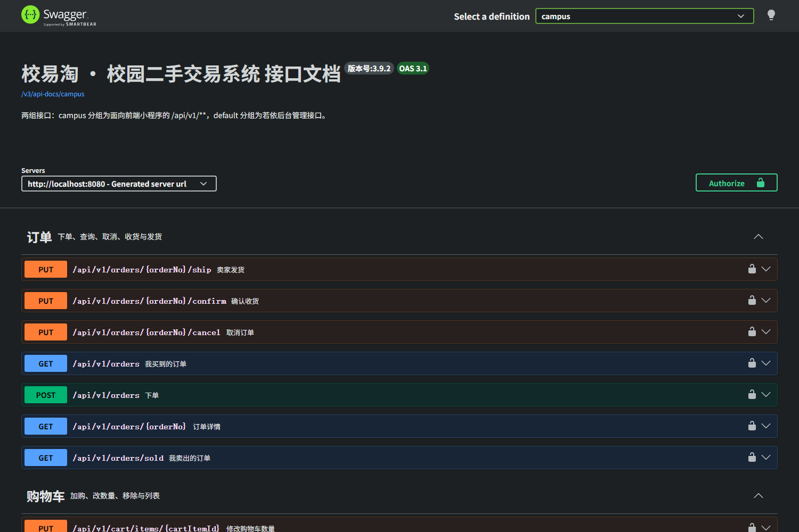
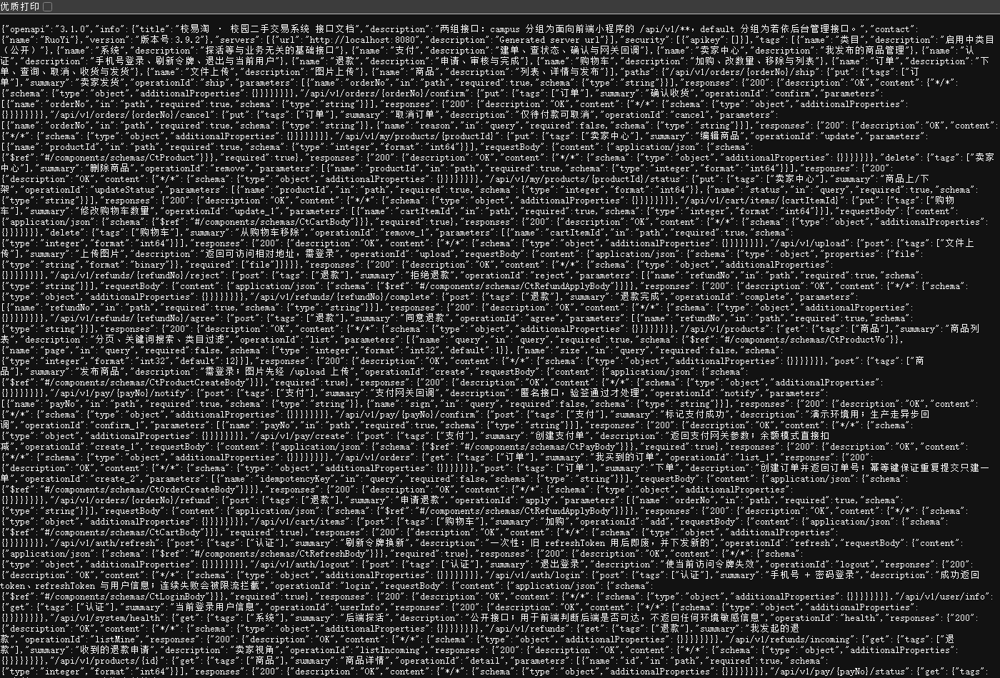
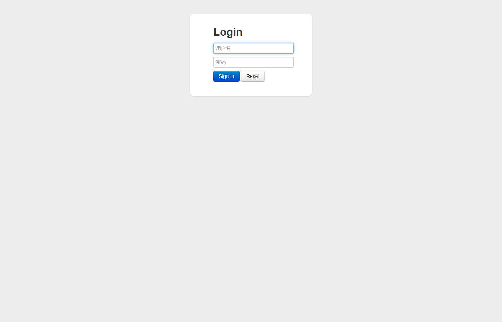
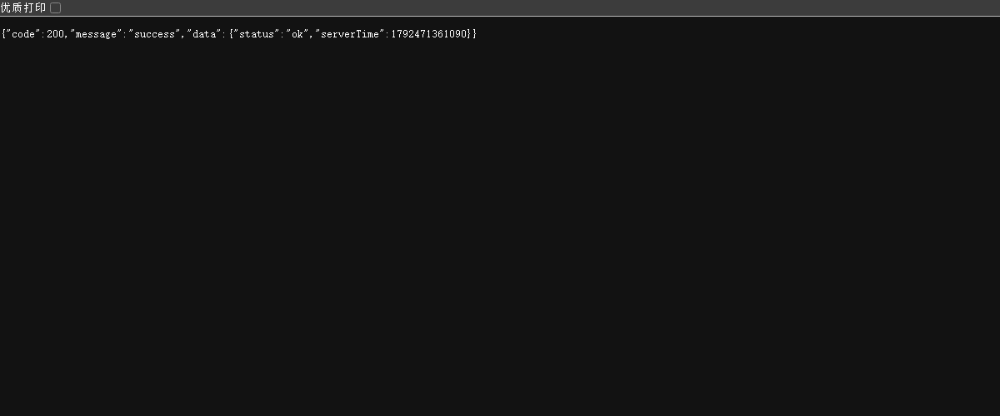
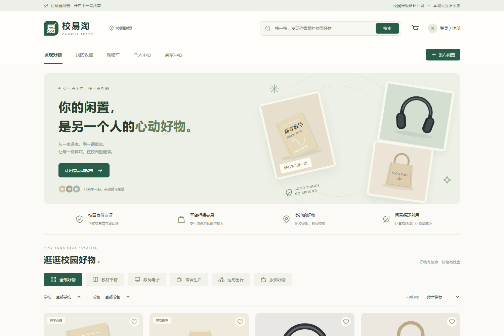
| 指标 | 数值 | 口径 |
|---|---|---|
| 单机压测 QPS | 1354（并发 50） | 4 个读接口加权混合，同机自压 |
| P95 延迟 | 56.8ms | 同上 |
| 错误率 | 0.00% | 49499 个请求零失败 |
| 业务模块行覆盖 | 42.2% | JaCoCo，含 73 个类 |
| 自动化用例 | 57 | 后端 38 + 前端 19 |
距企业级互联网应用标准，业务代码与工程习惯已经够用，差的是「生产运行时」这层：多实例与负载均衡、数据库主从与故障切换、日志集中化（ELK/Loki）、熔断降级、灰度发布、静态检查与 E2E。这些在能力对照表里都标了「未覆盖」，没有包装成已完成。
建议的补齐顺序：① 多实例 + LB（限流与定时任务已就绪）② 日志集中化 ③ 灰度与回滚演练 ④ 静态检查与 E2E ⑤ 有真实异步需求时再上 MQ。
docs/答辩问答稿.md。Q1 为什么不做微服务？单体怎么保证可扩展？
交易、库存、支付共享一个库，拆开就要处理分布式事务，现阶段是负收益。可扩展性放在了真正先出问题的地方：限流器支持 Redis 共享计数（多副本不再失效）、无状态 JWT（会话不绑实例）。证据：CtOrderServiceImpl:120,327 的事务边界、SlidingWindowLimiter 双实现。边界：日订单到十万级或需独立扩缩不同域时，先拆「支付回调 + 通知」这类异步链路，而不是核心交易。
Q2 库存怎么防超卖？为什么不用 version 乐观锁？
用条件原子扣减，把判断和扣减压进一条 SQL：update ... set stock = stock - ? where stock >= ?，affectedRows=0 即库存不足。乐观锁要两次往返且失败要重试，徒增复杂度。踩过的坑：MySQL 的 SET 从左到右求值，售罄判断必须写在扣减之前，否则剩 1 件会被误判售罄。证据：CtProductMapper.xml 的 deductStock 及其注释、StockConcurrencyTest。边界：分库分表后同商品库存必须路由到同一分片。
Q3 幂等怎么做的？为什么幂等表要和订单表分开？
客户端带 idempotencyKey，靠 ct_idempotency 的唯一键由数据库裁决，重复提交返回同一 groupNo。「先查订单表看有没有」在并发下不安全——两个请求会同时查到没有。分开建表是因为幂等键语义更长：一次请求可能产生多张订单（拆单），也可能什么都没产生。证据：uk_ct_idem_key、IdempotencyConcurrencyTest、闭环演示连点两次返回同一 groupNo。
Q4 多卖家拆单，一个卖家成功一个失败怎么办？
拆单、扣库存、写幂等记录在同一个事务里，任一失败整体回滚，不存在「一半成功」。跨库跨服务才需要 Saga 补偿。证据：uk_ct_order_group_seller 唯一索引、OrderLifecycleTest。边界：若把支付独立出去，需本地消息表 + 补偿任务。
Q5 限流为什么用滑动窗口？多实例为什么必须 Redis？Redis 挂了怎么办？
固定窗口有临界点双倍流量问题（59 秒与 61 秒各发 30 个即打穿）；进程内计数在 N 个副本下被放大 N 倍，是功能性失效而非性能问题。故用 ZSET + Lua 原子计数。Redis 故障时 fail-open（放行 + WARN），因为限流是保护手段，不该把业务打死。证据：RedisSharedRateLimitTest 的两实例共享与内存对照组、实测第 11 次起两个实例同时 429。
Q6 「认证失败返回 HTTP 200」怎么发现的？为什么之前没发现？
写角色权限演示用 curl 看状态码时发现：body 写着 code:401，HTTP 却是 200。之前没发现是因为前端只读 body 的 code，UI 表现一致；单测断言的是业务码。危害：网关与监控按 HTTP 状态判成败，错误率指标永远正常；前端判断 error.status === 401，刷新令牌分支永不触发。根因是若依 ServletUtils.renderString 里写死 setStatus(200)，已加带状态码重载。
Q7 覆盖率只有 43%，是不是测试不够？
43% 是全部 73 个业务类口径；核心路径远高于此（CtOrderServiceImpl 85.7%），拉低整体的是 DTO 与实体。我做了两件事而不是只解释：CI 加 35% 门禁防退化；门禁失败时列出未覆盖行最多的 10 个类，指哪补哪。证据：check-coverage.ps1 正反两向实测。
Q8 1354 QPS 是同机自压，怎么证明真实能力？
同机自压只能说明代码不是瓶颈。观察：并发 20→50，QPS 只涨 21% 而 RT 涨一倍，是服务端饱和的典型信号；健康检查 4ms 说明框架开销很小；49499 请求零错误，说明饱和时是排队而不是报错。瓶颈在同机 CPU 争抢与连接池 max-active=8。要拿真实容量需独立压测机，我没做，也不宣称。
Q9 离企业级上线还差什么？两周先做什么？
差「生产运行时」这层，但最近一轮把三件「看起来做了其实没生效」的事补成了真的：定时任务已切 JDBC 集群（双实例只跑一次）、备份已注册每日计划任务并用真实触发验证、告警已补上健康指标并打通 Alertmanager 投递。剩下优先级：①多实例 + LB ②日志集中化 ③灰度与回滚演练 ④静态检查与 E2E。先不做 MQ / 分布式事务 / CDN。证据：企业级能力对照表的「未覆盖项汇总」表。
Q10 AI 用到什么程度？怎么保证 AI 写的代码是对的？
用在骨架生成、测试补全、排障推理、文档整理；每个结论必须落到一次可复现实验上。本次三个问题（覆盖率恒为 0、dump 无法恢复、认证返回 200）都是先怀疑结论再做对照实验定位的——例如把 JaCoCo 输出改到纯英文目录 C:\jacoco-test，文件立刻产出，才确认是中文路径问题。判断标准只有一条：能不能用一次实验证伪它。
| 问题 | 诚实回答 |
|---|---|
| 为什么没有 XX 组件？ | 不需要，而且我能说清为什么不需要——单库单体上 MQ/分布式事务是负资产 |
| 覆盖率为什么不是 80%？ | 核心路径 85%，整体被 DTO 拉低；有 35% 门禁防退化，提到 70% 需补 Controller 层用例 |
| 做过什么事故复盘？ | 没有线上环境，但本机复现并修复了 3 个真实缺陷：中文路径致覆盖率失效、GTID 致备份无法恢复、HTTP 200 掩盖认证失败 |
问题：启动日志一直是 Using job-store 'org.quartz.simpl.RAMJobStore' - which does not support persistence. and is not clustered.。这种状态下起两个实例，三个默认任务会被两个节点各跑一遍，日志双写、业务重复执行。
做法：切 spring.quartz.job-store-type=jdbc；表交给 Flyway（V3__quartz_cluster_tables.sql，全部 create table if not exists），并设 initialize-schema: never，避免 Spring 每次启动把调度状态和锁表 DROP 掉。同时改造 SysJobServiceImpl.init()：原来是 scheduler.clear() + 全量重建，后启动的节点会把已在跑的触发器删掉；现在先查 QRTZ_SCHEDULER_STATE，60 秒内有其他节点心跳就跳过初始化。
证据：两个实例启动后 QRTZ_SCHEDULER_STATE 有 2 行；节点 B 日志出现「集群模式下已有其他调度实例在线，跳过任务初始化」；任务执行记录严格 10 秒一条、没有同秒成对：
18:53:10 18:53:20 18:53:30 18:53:40 18:53:50 18:54:00 （sys_job_log，cron 0/10 * * * * ?）
问题：backup.ps1 早就写好并做过恢复验证，但没有任何调度 —— 没有人会每天手动点一下。而且计划任务没有交互环境变量，直接注册必然取不到数据库密码。
做法：新增 scripts/install-backup-task.ps1：口令写入 %LOCALAPPDATA%\campus-shop\db-password 并用 icacls 限定当前用户；用 ScheduledTasks 模块注册每日 02:00 的任务（不用 schtasks 拼引号，踩过两次）；装完立刻 Start-ScheduledTask 验证真能产出文件。备份脚本本身补了三件事：写 logs/backup.log、文件小于 1KB 判失败、支持 -Offsite 异地副本。
证据：LastTaskResult = 0；新备份 shop-20261025-185836.sql 130.5 KB；异地目录同样落盘；日志里记录了 SHA256 与保留份数。
问题：HealthDegraded 规则写的是 health{job="campus-shop"} < 1。但 /actuator/health 是端点，不是指标，Micrometer 里没有 health 这个名字。Prometheus 会得到空结果集，规则永远不触发，而且不会有任何报错。
做法：补一个 campus_health_status gauge（1=UP，0=非 UP，由 HealthEndpoint 实时取值），规则改用它；再用 scripts/check-alerting.ps1 把这件事变成可回归的检查 —— 抽取规则里引用的每个指标名，去实时 /actuator/prometheus 里比对，不存在就失败。
证据：自检第一次跑就报出 3 个不存在的指标（health、http_server_requests_seconds_count、_bucket），其中后两个是「刚启动还没有请求序列」的假阳性，已通过预热 + 解析 # TYPE 派生修正；修完 campus_health_status 后自检全绿。
接收端也做了真实验证：本地起 Alertmanager，推一条 severity=critical 的测试告警，被路由到 critical-webhook 并投递成功，webhook 收到 883 字符载荷：
{"receiver":"critical-webhook","status":"firing","alerts":[{"labels":{"alertname":"CampusDemoAlert4","severity":"critical"}}]}
| 维度 | 能力 | 状态 | 30 秒内能拿出的证据 |
|---|---|---|---|
| 安全 | 认证与授权 | 已覆盖 | scripts\demo-rbac.ps1：匿名 401 / 买家越权 404 / 卖家 200 |
| HTTPS | 已覆盖 | https://localhost:8443 实测 200，证书 CN=localhost | |
| 依赖漏洞 | 已覆盖 | CI 步骤「依赖漏洞门禁」success；vue 已升到 3.5.44 | |
| 凭据管理 | 已覆盖 | git grep qazwsx 为空；不配 CAMPUS_DB_PASSWORD 启动直接失败 | |
| 高可用 | 多实例 | 已覆盖 | scripts\demo-lb.ps1：分流 4/4、令牌跨节点 6/6、杀节点后 6/6 |
| 共享限流 | 已覆盖 | 同脚本：12 次请求第 11 次起统一 429 | |
| 定时任务集群 | 已覆盖 | QRTZ_SCHEDULER_STATE 2 行；sys_job_log 严格 10 秒一条 | |
| 可观测 | 指标与告警 | 已覆盖 | scripts\check-alerting.ps1 全绿；Alertmanager 实测投递到 webhook |
| 日志集中化 | 已覆盖 | scripts\demo-logs.ps1 六项断言；Loki 按 traceId 召回 | |
| 健康检查 | 已覆盖 | /actuator/health 含 DB 组件状态 | |
| 发布 | 回滚 | 已覆盖 | docs\回滚演练记录.md：实测 9.8 秒，远优于 10 分钟目标 |
| 灰度 | 已覆盖 | scripts\demo-canary.ps1：header 强制 / 比例分流 / 写接口不进灰度 | |
| 质量 | 自动化测试 | 已覆盖 | 后端 39 + 前端 19 用例全绿（58） |
| 覆盖率门禁 | 已覆盖 | 业务模块行 42.2%，低于 35% 构建失败 | |
| 契约漂移 | 已覆盖 | CI 比对运行时 OpenAPI 与仓库快照 | |
| 未做 | MySQL 主从 | 已评估 | 见风险登记表 R-01（含触发条件：日活 > 5000） |
| 全链路追踪 | 已评估 | R-02：单体内部无跨服务调用，traceId 已贯穿 | |
| 静态检查 / E2E | 已评估 | R-06 / R-07：区分「已评估不做」与「遗漏」 | |
| 渗透测试 | 已评估 | R-03：OWASP Top10 已逐项自查并落到用例 |
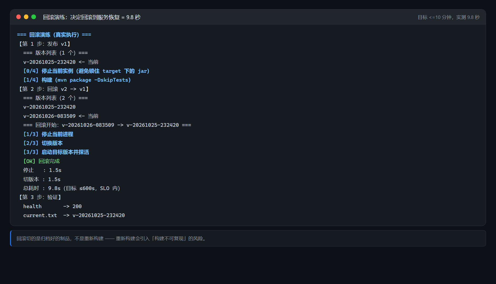
要点：回滚切的是归档好的制品（releases/v-xxx/ruoyi-admin.jar），不是重新构建。重新构建会引入「构建不可复现」的风险 —— 今天能构建出来的东西，明天不一定。与容器化按镜像 tag 回退是同一套思路。
单实例回滚必然有秒级中断；要做到零中断，前置条件是 7.0 节的多副本 + LB 已就绪（本仓库已具备）。
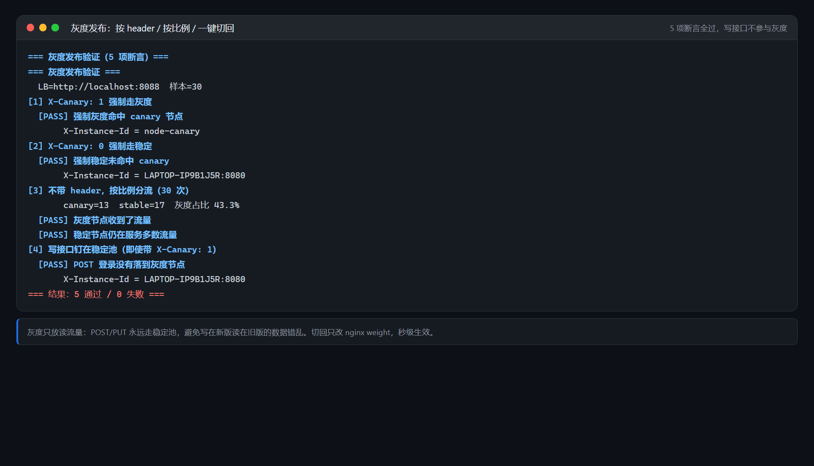
| 设计 | 原因 |
|---|---|
| 写接口钉在稳定池 | 否则会出现「写在新版、读在旧版」的数据错乱，或新版 bug 直接产生脏数据 |
| 按 IP 一致性哈希 | 同一用户始终落在同一侧，刷新页面不会在两套逻辑间跳 |
| 切回只改权重 | 秒级生效，不必回滚镜像 —— 灰度的价值就在「快速止血」 |
| header 可强制分流 | 验证时不必等概率命中，也让内部账号能提前看新版 |
完整表格见 docs/风险登记表.md。每条都写清：为什么不做的理由 / 影响 / 触发条件 / 缓解措施。评审看到「未覆盖」会追问；看到「已评估、影响可接受、触发条件明确」通常就过了。
| 编号 | 项 | 触发条件（何时必须补） |
|---|---|---|
| R-01 | MySQL 主从 | 日活 > 5000，或要求 RTO < 1 小时，或写 QPS > 200 |
| R-02 | 全链路追踪 | 出现第二个后端服务 |
| R-03 | 渗透测试 | 上线前或首次对外推广前 |
| R-04 | Kubernetes | 服务数 > 10，或需自动伸缩 |
| R-05 | 消息队列 | 出现耗时 > 1s 的副作用操作 |
| R-06 | 静态检查 | 团队 > 3 人或多人并行开发 |
| R-07 | E2E | 前端页面数 > 10 或改动频繁 |
| R-08 | 字段脱敏 | 新增返回用户列表的对外接口 |
| R-09 | 灰度自动判定 | 灰度常态化（每周多次） |
| R-10 | 密码策略 | 对外开放注册前 |
| R-11 | 容量模型 | 上线后 1 个月拿到真实流量曲线 |
| R-12 | 日志归档 | 合规要求或季度级回溯分析 |